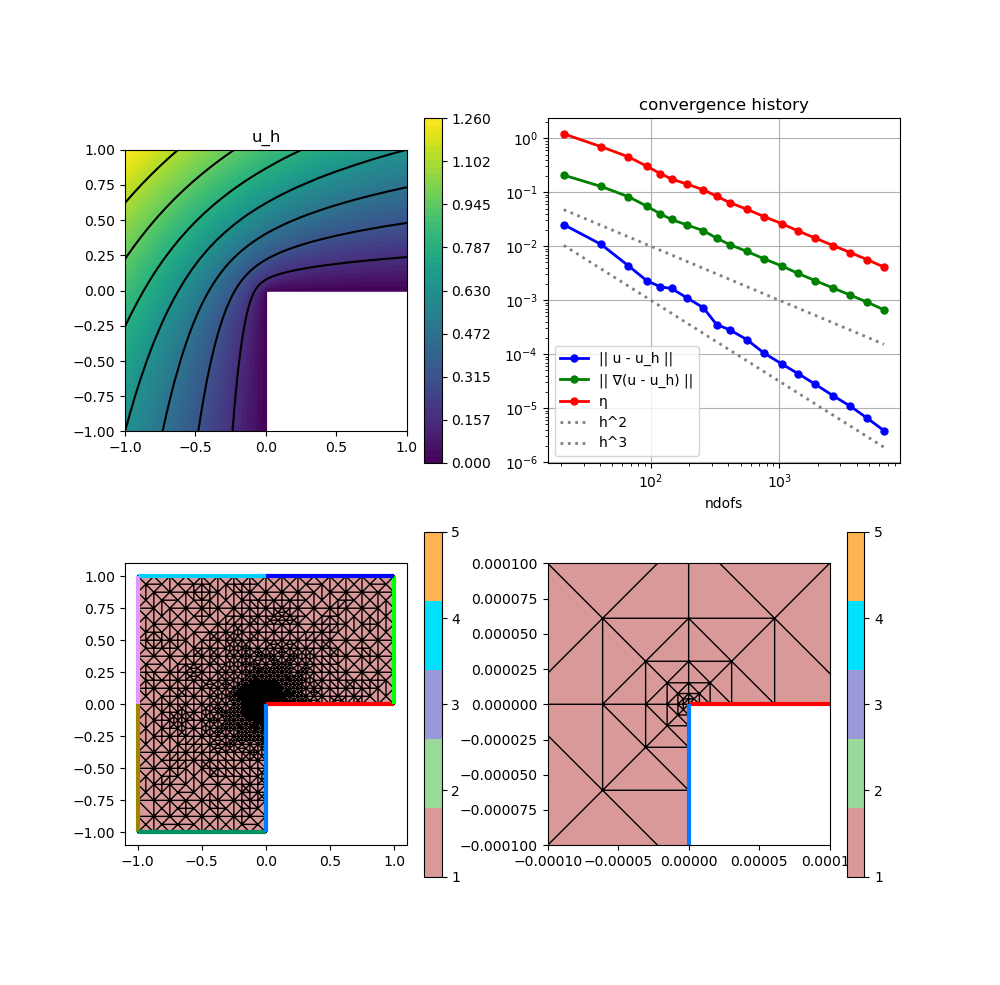

210 : Poisson L-shape Adaptive Mesh Refinement
This example computes the standard-residual error estimator for the $H^1$ error $e = u - u_h$ of some $H^1$-conforming approximation $u_h$ to the solution $u$ of some Poisson problem $-\Delta u = f$ on an L-shaped domain, i.e.
\[\eta^2(u_h) := \sum_{T \in \mathcal{T}} \lvert T \rvert \| f + \Delta u_h \|^2_{L^2(T)} + \sum_{F \in \mathcal{F}} \lvert F \rvert \| [[\nabla u_h \cdot \mathbf{n}]] \|^2_{L^2(F)}\]
This example script showcases the evaluation of 2nd order derivatives like the Laplacian and adaptive mesh refinement.
module Example210_PoissonLshapeAdaptive2D
using GradientRobustMultiPhysics
using ExtendableGrids
using GridVisualize
# exact solution u for the Poisson problem
function u!(result,x)
result[1] = atan(x[2],x[1])
if result[1] < 0
result[1] += 2*pi
end
result[1] = sin(2*result[1]/3)
result[1] *= (x[1]^2 + x[2]^2)^(1/3)
end
# everything is wrapped in a main function
function main(; verbosity = 0, maxdofs = 5000, theta = 1//3, order = 2, Plotter = nothing)
# set log level
set_verbosity(verbosity)
# initial grid
xgrid = grid_lshape(Triangle2D)
# choose some finite element
FEType = H1Pk{1,2,order}
# negotiate data functions to the package
u = DataFunction(u!, [1,2]; name = "u", dependencies = "X", bonus_quadorder = 5)
# setup Poisson problem
Problem = PoissonProblem()
add_boundarydata!(Problem, 1, [2,3,4,5,6,7], BestapproxDirichletBoundary; data = u)
add_boundarydata!(Problem, 1, [1,8], HomogeneousDirichletBoundary)
# setup exact error evaluations
L2Error = L2ErrorIntegrator(u, Identity)
H1Error = L2ErrorIntegrator(∇(u), Gradient)
# define error estimator
# kernel for jump term : |F| ||[[grad(u_h)*n_F]]||^2_L^2(F)
xFaceVolumes::Array{Float64,1} = xgrid[FaceVolumes]
xFaceNormals::Array{Float64,2} = xgrid[FaceNormals]
xCellVolumes::Array{Float64,1} = xgrid[CellVolumes]
function L2jump_integrand(result, input, item)
result[1] = ((input[1]*xFaceNormals[1,item[1]] + input[2]*xFaceNormals[2,item[1]])^2) * xFaceVolumes[item[1]]
return nothing
end
# kernel for volume term : |T| * ||f + Laplace(u_h)||^2_L^2(T)
# note: f = 0 here, but integrand can also be made x-dpendent to allow for non-homogeneous rhs
function L2vol_integrand(result, input, item)
result[1] = input[1]^2 * xCellVolumes[item[1]]
return nothing
end
# ... which generates an action...
eta_jumps_action = Action(L2jump_integrand, [1,2]; name = "kernel of η (jumps)", dependencies = "I", bonus_quadorder = order-1)
eta_vol_action = Action(L2vol_integrand, [1,1]; name = "kernel of η (vol)", dependencies = "I", bonus_quadorder = order-1)
# ... which is used inside an ItemIntegrator
ηF = ItemIntegrator([Jump(Gradient)],eta_jumps_action; AT = ON_IFACES, name = "η_F")
ηT = ItemIntegrator([Laplacian],eta_vol_action; name = "η_T")
NDofs = zeros(Int, 0)
ResultsL2 = zeros(Float64, 0)
ResultsH1 = zeros(Float64, 0)
Resultsη = zeros(Float64, 0)
Solution = nothing
ndofs = 0
level = 0
while ndofs < maxdofs
level += 1
# create a solution vector and solve the problem
println("------- LEVEL $level")
@time begin
FES = FESpace{FEType}(xgrid)
Solution = solve(Problem, FES)
ndofs = length(Solution[1])
push!(NDofs, ndofs)
println("\t ndof = $ndofs")
print("@time solver =")
end
# calculate local error estimator contributions
@time begin
xFaceVolumes = xgrid[FaceVolumes]
xFaceNormals = xgrid[FaceNormals]
xCellVolumes = xgrid[CellVolumes]
vol_error = zeros(Float64,1,num_sources(xgrid[CellNodes]))
jump_error = zeros(Float64,1,num_sources(xgrid[FaceNodes]))
evaluate!(vol_error,ηT,Solution[1])
evaluate!(jump_error,ηF,Solution[1])
# calculate total estimator
push!(Resultsη, sqrt(sum(jump_error) + sum(vol_error)))
print("@time η eval =")
end
# calculate exact L2 error, H1 error
@time begin
push!(ResultsL2, sqrt(evaluate(L2Error,Solution[1])))
push!(ResultsH1, sqrt(evaluate(H1Error,Solution[1])))
print("@time e eval =")
end
if ndofs >= maxdofs
break;
end
# mesh refinement
@time begin
if theta >= 1 ## uniform mesh refinement
xgrid = uniform_refine(xgrid)
else ## adaptive mesh refinement
# compute refinement indicators
nfaces = num_sources(xgrid[FaceNodes])
refinement_indicators::Array{Float64,1} = view(jump_error,1,:)
xFaceCells = xgrid[FaceCells]
cell::Int = 0
for face = 1 : nfaces, k = 1 : 2
cell = xFaceCells[k,face]
if cell > 0
refinement_indicators[face] += vol_error[1,cell]
end
end
# refine by red-green-blue refinement (incl. closuring)
facemarker = bulk_mark(xgrid, refinement_indicators, theta; indicator_AT = ON_FACES)
xgrid = RGB_refine(xgrid, facemarker)
end
print("@time refine =")
end
println("\t η = $(Resultsη[level])\n\t e = $(ResultsH1[level])")
end
# plot
p=GridVisualizer(; Plotter = Plotter, layout = (2,2), clear = true, resolution = (1000,1000))
scalarplot!(p[1,1], xgrid, nodevalues_view(Solution[1])[1], levels = 7, title = "u_h")
convergencehistory!(p[1,2], NDofs, [ResultsL2 ResultsH1 Resultsη]; add_h_powers = [order,order+1], X_to_h = X -> X.^(-1/2), ylabels = ["|| u - u_h ||", "|| ∇(u - u_h) ||", "η"])
gridplot!(p[2,1], xgrid; linewidth = 1)
gridplot!(p[2,2], xgrid; linewidth = 1, xlimits = [-0.0001,0.0001], ylimits = [-0.0001,0.0001])
# print convergence history
print_convergencehistory(NDofs, [ResultsL2 ResultsH1 Resultsη]; X_to_h = X -> X.^(-1/2), ylabels = ["|| u - u_h ||", "|| ∇(u - u_h) ||", "η"])
end
endThis page was generated using Literate.jl.
